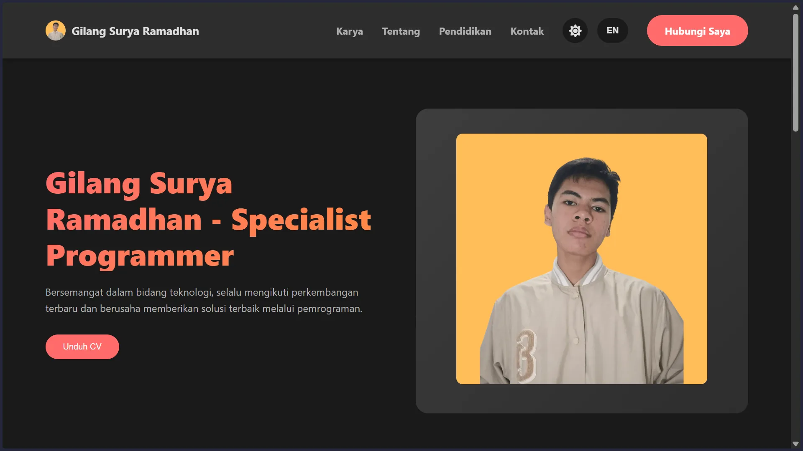
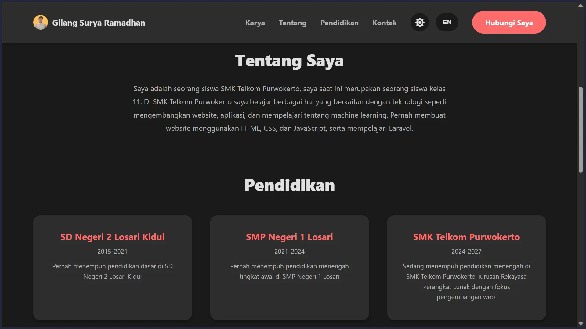
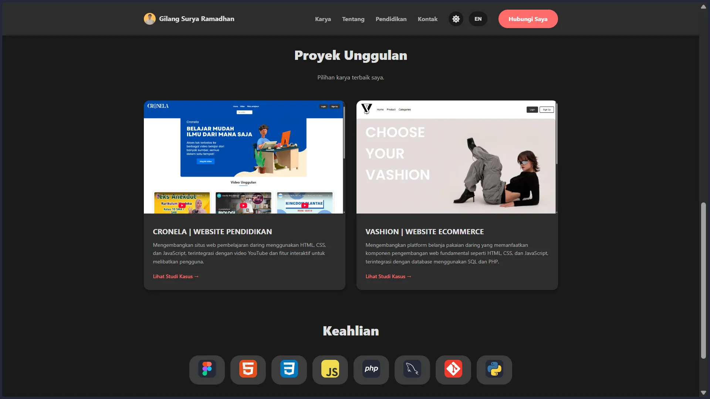

Saya memulai dengan mencari refrensi untuk membuat website portfolio ini, dari komunitas, github, dan video-video youtube. Saya akhirnya bisa membuat sebuah website portfolio yang menampilkan informasi tentang diri saya dalam tampilan yang ringkas.
Tantangan terbesar dalam mengembangkan website ini adalah mencari refrensi-refrensi yang cocok untuk saya terapkan dalam website ini.

